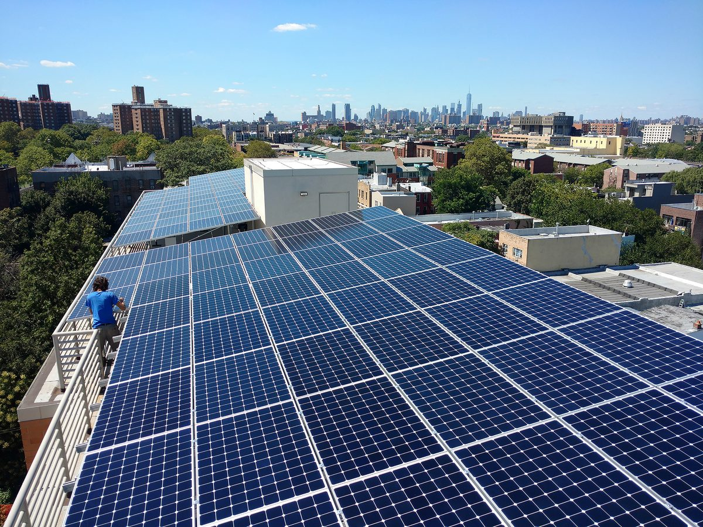

미국 브루클린 24세대 주택협동조합, 추가 분담금 없이 지붕 태양광…건물 통합계량 차익으로 23만2,000달러 대출 갚는다

선셋파크 '파크힐', 세대별 전력 계정 없애고 조합이 전기 한꺼번에 사서 조합원에게 소매요금 청구…재계량 수입 연 7,000달러·태양광 크레딧 연 7,000달러에 정부 지원금으로 상환, 갚은 뒤 쓰임은 이사회가 결정
미국 뉴욕 브루클린 선셋파크의 24세대 주택협동조합 파크힐(Park Hill)이 조합원에게 추가 분담금을 걷거나 적립금을 헐지 않고 지붕 태양광과 건물 전기설비 개선을 해냈다. 조합원들이 막 지붕 교체비를 나눠 낸 터라 또 돈을 걷기 어렵다고 본 이사회는 재계량(submetering) 플랫폼 데이지체인(DaisyChain)에서 23만2,000달러를 빌렸고, 대출 조건에 따라 건물 전체에 통합계량기를 달았다. 세대마다 따로 있던 전력회사 콘에디슨 계정을 없애 매달 내던 기본요금을 줄이고, 조합이 전기를 한꺼번에 사서 조합원에게는 소매요금으로 청구하는 구조여서 그 차이가 건물의 수입이 된다. 세대별 계량에서는 태양광이 공용부 전기만 상쇄했지만 통합계량으로 세대 사용분까지 상쇄할 수 있게 되면서 지붕을 가득 채운 18만3,000달러 규모 설비를 올렸고, 조합은 연 7,000달러로 예상되는 재계량 수입과 연 7,000달러의 태양광 크레딧, 정부 지원금으로 대출을 갚은 뒤 그 이익을 조합원에게 돌려줄지 시설 적립금으로 쌓을지 이사회가 정하게 된다. 이 대출은 담보 대신 미래 현금흐름을 근거로 한 민간 자본 대출의 시험 사례로, 원금 절반을 갚으면 금리가 내려가게 짜였다. 이사 카밀라 소머스(Camilla Somers)는 "100년 된 건물의 장기 수입을 위한 일"이었다고 말했다.
시민에너지 관점
24세대가 사는 100년 된 건물이 조합원 주머니를 다시 열지 않고도 지붕을 태양광으로 채운 것은, 공동주택 태양광을 가로막는 것이 지붕이 아니라 초기 자금과 계량 구조라는 점을 보여 준다. 독일도 2017년 세입자전기(Mieterstrom) 제도를 만들어 건물 지붕에서 만든 전기를 같은 건물 주민에게 바로 공급할 수 있는 길을 열었다. 조합원이 여전히 소매요금을 내니 개인에게 돌아오는 몫은 당장 없다는 지적이 나올 수 있지만, 그 차익은 외부 회사가 아니라 조합원이 함께 소유한 건물에 쌓이고 쓰임도 조합원이 뽑은 이사회가 정한다는 점이 주민 소유의 힘이다. 국내 아파트와 연립주택에서도 주민 조직이 지붕 태양광을 소유하고 단지 안에서 전기를 함께 계량·정산할 수 있도록 제도의 문을 열어야 한다.
출처: 해비탯 매거진(Habitat Magazine) 2026-10-27 Emily Myers 원문 보기
米ブルックリンの24戸の住宅協同組合、追加負担金なしで屋根に太陽光…建物一括計量の差益で23万2,000ドルの融資を返済
サンセットパークのパークヒル、戸別の電力契約をなくし組合が電気を一括購入して組合員に小売料金で請求…再計量収入年7,000ドル・太陽光クレジット年7,000ドルと政府支援で返済、返済後の使い道は理事会が決定
米ニューヨーク・ブルックリンのサンセットパークにある24戸の住宅協同組合パークヒル（Park Hill）が、組合員から追加負担金を集めたり積立金を取り崩したりすることなく、屋根の太陽光発電と建物の電気設備の改修を実現した。組合員が屋根の葺き替え費用を負担したばかりで再びお金を集めるのは難しいと判断した理事会は、再計量（サブメータリング）プラットフォームのデイジーチェーン（DaisyChain）から23万2,000ドルを借り入れ、融資の条件に従って建物全体に一括計量器を設置した。戸別にあった電力会社コンエジソンの契約をなくして毎月の基本料金を減らし、組合が電気を一括購入して組合員には小売料金で請求する仕組みのため、その差額が建物の収入になる。戸別計量では太陽光が共用部の電気しか相殺できなかったが、一括計量で各戸の使用分まで相殺できるようになったことで、屋根いっぱいに18万3,000ドル規模の設備を載せた。組合は年7,000ドルと見込む再計量収入と年7,000ドルの太陽光クレジット、政府の支援金で融資を返済し、その後は利益を組合員に還元するか設備積立金に回すかを理事会が決める。この融資は担保ではなく将来のキャッシュフローを根拠にした民間資本融資の試行例で、元本の半分を返済すると金利が下がる仕組みだ。理事のカミラ・ソマーズ（Camilla Somers）氏は「築100年の建物の長期的な収入のためだった」と語った。
市民エネルギーの視点
24世帯が暮らす築100年の建物が、組合員の財布を再び開かせることなく屋根を太陽光で埋めたことは、集合住宅の太陽光を阻んでいるのが屋根ではなく初期資金と計量の仕組みだということを示している。ドイツも2017年に入居者電力（Mieterstrom）制度を設け、建物の屋根でつくった電気を同じ建物の住民に直接供給する道を開いた。組合員は小売料金を払い続けるので個人に戻る分は当面ないとの指摘も出かねないが、その差益は外部の会社ではなく組合員が共に所有する建物に蓄えられ、使い道も組合員が選んだ理事会が決めるという点こそが住民所有の力だ。韓国のマンションや連立住宅でも、住民組織が屋根の太陽光を所有し、団地内で電気を共同で計量・精算できるよう制度の扉を開くべきだ。
出典: ハビタット・マガジン（Habitat Magazine） 2026-10-27 エミリー・マイヤーズ（Emily Myers） 原文を読む
美国布鲁克林24户住房合作社不加摊派建成屋顶光伏…以整栋统一计量的差价偿还23.2万美元贷款
日落公园的Park Hill取消分户电力账户、由合作社统一购电再按零售电价向成员收费…以每年7,000美元转计量收入、每年7,000美元光伏抵扣额和政府补助还款，还清后用途由理事会决定
美国纽约布鲁克林日落公园（Sunset Park）的24户住房合作社Park Hill，在不向成员加收摊派、也不动用储备金的情况下，完成了屋顶光伏和楼内电气设备的升级。由于成员刚刚分摊了屋顶翻修费用，理事会判断难以再次集资，于是向转计量（submetering）平台DaisyChain借款23.2万美元，并按贷款条件为整栋楼安装了统一总电表。取消各户在电力公司Con Edison的独立账户，可以减少每月的基本费用；合作社统一购电，再按零售电价向成员收费，其中的差价就成为大楼的收入。分户计量时，光伏只能抵消公共区域的用电，改为统一计量后可以抵消各户的用电，因此合作社铺满屋顶，建成了规模18.3万美元的光伏设备。合作社将以预计每年7,000美元的转计量收入、每年7,000美元的光伏抵扣额和政府补助偿还贷款，还清后由理事会决定把收益返还成员还是存入设施储备金。这笔贷款是以未来现金流而非传统抵押为依据的民间资本贷款试点，还清一半本金后利率会下调。理事Camilla Somers表示，这是"为了一栋百年老楼的长期收入"。
市民能源视角
住着24户人家的百年老楼没有再让成员掏钱，就把屋顶铺满了光伏，这说明阻碍集合住宅光伏的不是屋顶，而是初期资金和计量结构。德国也在2017年建立了租户电力（Mieterstrom）制度，开辟了把楼顶所发电力直接供应给同楼居民的途径。有人可能指出，成员仍按零售电价缴费，个人暂时得不到实惠，但这笔差价不是落入外部公司，而是积累在成员共同拥有的大楼里，用途也由成员选出的理事会决定，这正是居民所有的力量。韩国的公寓和联排住宅也应打开制度之门，让居民组织拥有屋顶光伏，并能在小区内共同计量和结算电力。
来源: Habitat Magazine 2026-10-27 Emily Myers 查看原文
24-unit Brooklyn housing co-op adds rooftop solar without an extra assessment, repaying a $232,000 loan from the spread on a building-wide master meter
Sunset Park's Park Hill dropped individual utility accounts so the co-op buys power in bulk and bills shareholders at the retail rate; submetering revenue of $7,000 a year, $7,000 a year in solar credits and government incentives will repay the loan, after which the board decides how to use the money
Park Hill, a 24-unit housing co-op in Sunset Park, Brooklyn, New York, has installed rooftop solar and upgraded its building's electrical system without levying an extra assessment on shareholders or drawing down its reserves. Because shareholders had just paid for a roof replacement, the board judged that another assessment was not realistic and borrowed $232,000 from the submetering platform DaisyChain, installing a master meter for the whole building as the loan requires. Closing the individual Con Edison accounts for each apartment reduces monthly service charges, and because the co-op now buys electricity in bulk and bills shareholders at the retail rate, the difference becomes income for the building. With individual meters, solar would have offset only common-area electricity, but the master meter lets it offset apartment use as well, so the co-op filled its roof with a $183,000 array; it will repay the loan with expected submetering revenue of $7,000 a year, $7,000 a year in solar credits and government incentives, after which the board will decide whether to return the savings to shareholders or put them into a fund for future capital improvements. The privately funded loan is a test case for financing building upgrades on the basis of future cash flow rather than traditional collateral, and its interest rate falls once half the principal has been repaid. Board member Camilla Somers said the project was "about long-term revenue for a 100-year old building."
Citizen Energy View
A 100-year-old, 24-unit building covering its roof with solar without asking shareholders to dig into their pockets again shows that what holds back solar on multifamily housing is not the roof but upfront capital and metering rules. Germany, too, created its tenant electricity (Mieterstrom) scheme in 2017, opening a way to supply power generated on a building's roof directly to the people living in it. Some may point out that shareholders still pay the retail rate, so individuals see no immediate gain, but the spread accrues to a building the members own together rather than to an outside company, and its use is decided by a board the members elect, which is the strength of resident ownership. Korea should likewise open the door for residents' organisations in apartment blocks and row houses to own rooftop solar and to meter and settle electricity together within their complex.
Source: Habitat Magazine 2026-10-27 Emily Myers Read the original